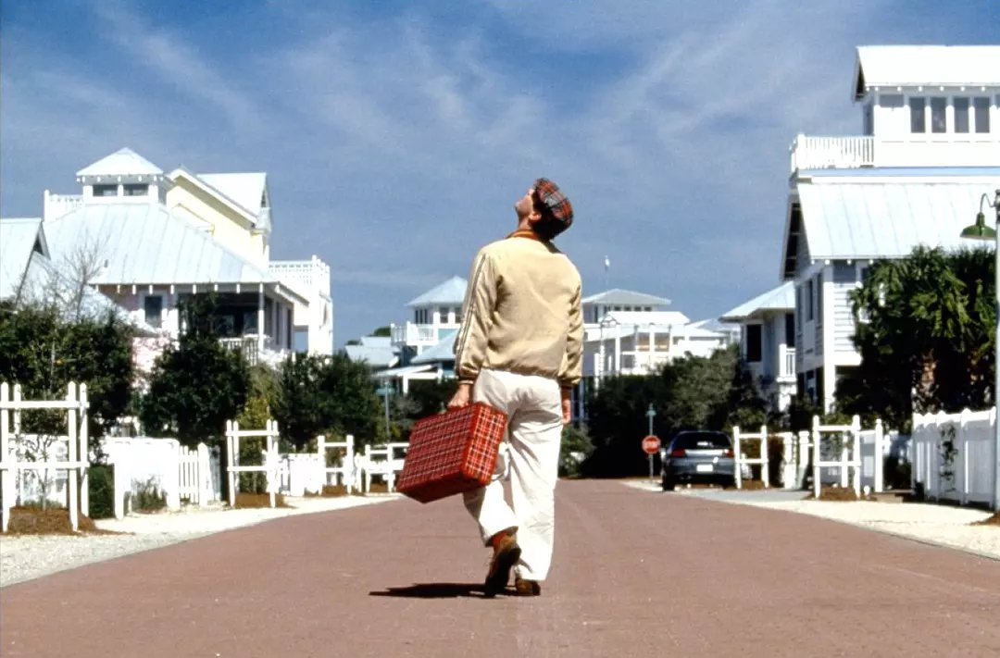

楚门的世界

概况
导演: 彼得·威尔
编剧: 安德鲁·尼科尔
主演: 金·凯瑞 / 劳拉·琳妮 / 诺亚·艾默里奇 / 艾德·哈里斯 / 娜塔莎·麦克艾霍恩 / 更多...
类型: 剧情
制片国家/地区: 美国
语言: 英语
上映日期: 1998-06-05
片长: 103分钟
剧情简介
30年前奥姆尼康电视制作公司收养了一名婴儿，他们刻意培养他使其成为全球最受欢迎的纪实性肥皂剧《楚门的世界》中的主人公，公司为此取得了巨大的成功。然而这一切却只有一人全然不知，他就是该剧的唯一主角楚门。 楚门从小到大一直生活在一座叫桃源岛的小城（实际上是一座巨大的摄影棚），他是这座小城里的一家保险公司的经纪人，楚门看上去似乎过着与常人完全相同的生活，但他却不知道生活中的每一秒钟都有上千部摄像机在对着他，每时每刻全世界都在注视着他，更不知道身边包括妻子和朋友在内的所有人都是《楚门的世界》的演员。
虽然感觉到每个人似乎都很注意他，而且从小到大所做的每一件事却都有着一些意想不到的戏剧性的效果，但这些都没有使这位天性淳朴的小伙子太过于在意。可节目的制作组由于一时的疏忽，竟让在楚门小时候因他而“死”的“父亲”再次露面，“父亲”立即被工作人员带走，直到楚门悲痛万分开始怀疑后他们编织了一个完美的谎言让他们“父子”相见，从而达到他们满意的效果。 多年前一位既是《楚门的世界》的忠实观众又是该节目群众演员的年轻姑娘施维亚十分同情楚门，楚门对她一见钟情。她给了楚门一些善意的暗示，自己却被强行带离片场。回忆起施维亚的楚门开始重新认识自己的生活。渐渐地楚门发现他工作的公司每一个人都在他出现后才开始真正的工作，他家附近的路上每天都有相同的人和车在反复来往，更让他不敢相信的是，自称是医生并每天都去医院工作的妻子竟不是医生。楚门开始怀疑他所生活的这个世界，包括他妻子、朋友、父亲等所有的人都在骗他，一种发自内心的恐惧油然而生。 痛定思痛，他决定不惜一切代价逃出海景这个令他噤若寒蝉的小城，去寻找属于自己真正的生活和真正爱他的人。然而，楚门却低估了集这个肥皂剧的制作人、导演和监制大权于一身的克里斯托弗的力量。克里斯托弗将一切都设计得近乎完美，近30年里牢牢地把楚门控制在海景的超现实世界之中。
几次逃脱都失败后，楚门决定从海上离开这座小城，然而他却绝望地发现他面前的大海和天空竟然也是这个巨大摄影棚的一部分，这时克里斯托弗在天上巨大的控制室里向楚门讲述了事情的来龙去脉，并告诉楚门他如今已经是世界上最受欢迎的明星，他今天所取得的一切是常人无法想象的，如果他愿留在海景就可继续明星生活，楚门不为所动，毅然走向远方的自由之路